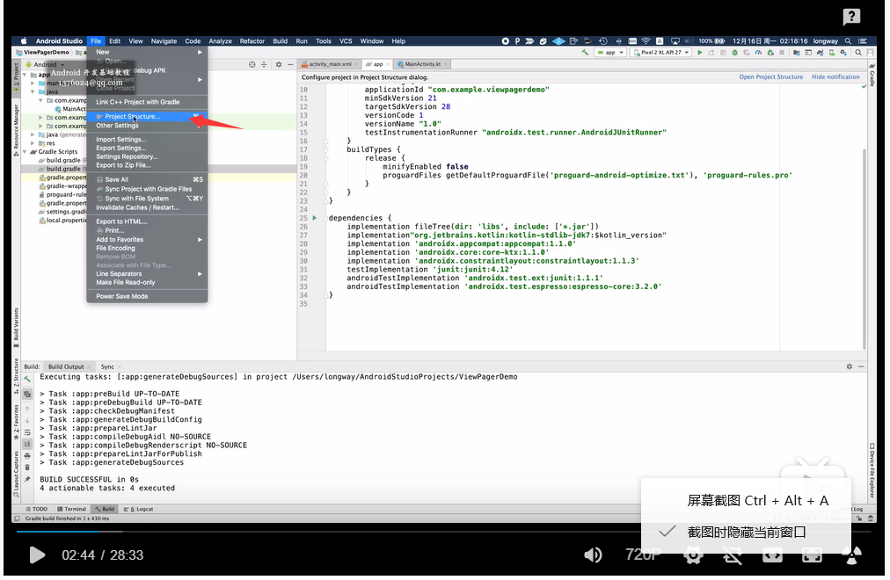
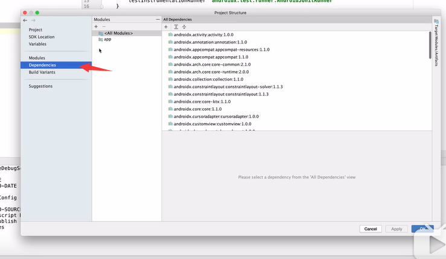
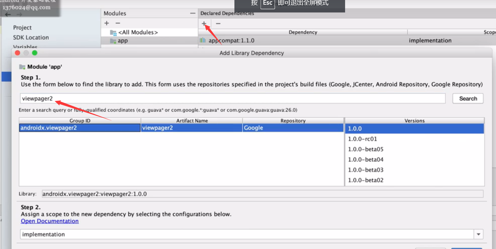
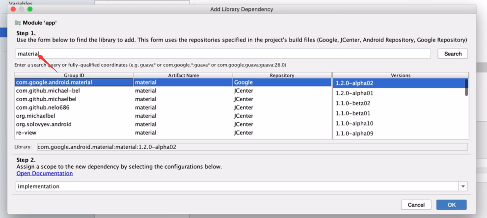
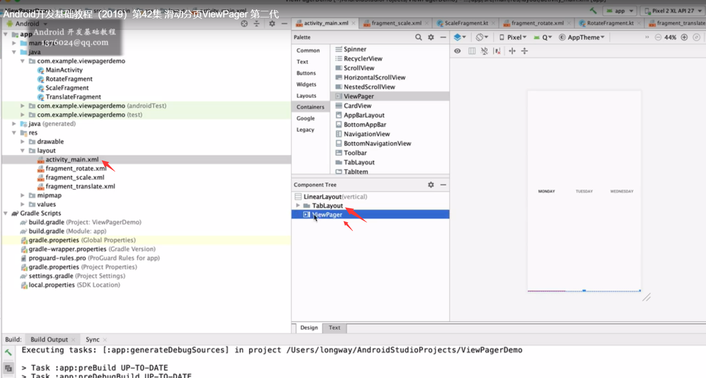
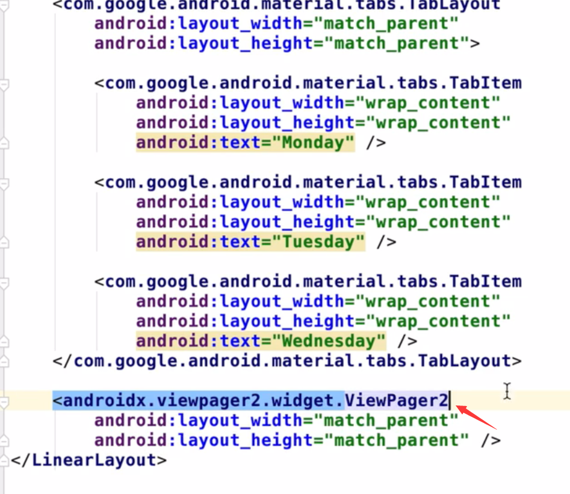
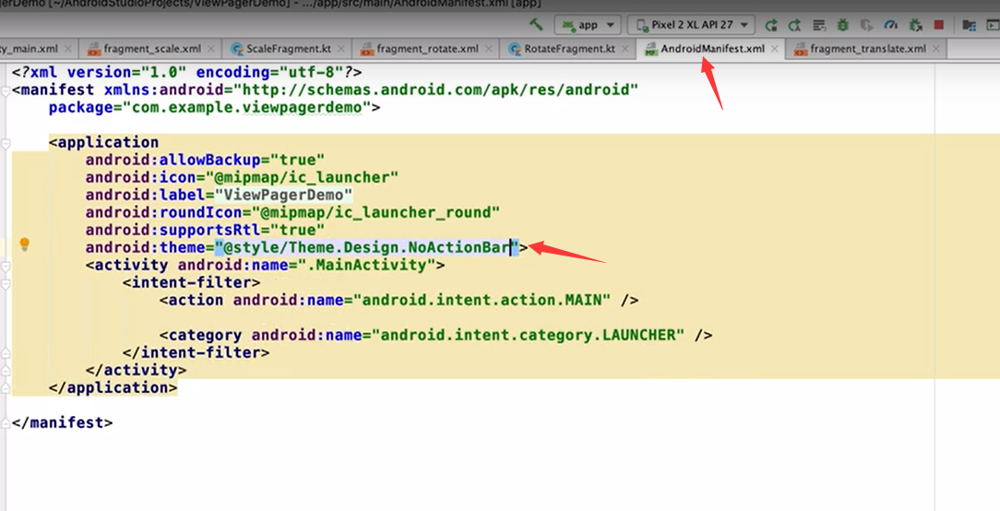

viewPage2添加依赖 def paging_version = "2.1.0" implementation "androidx.paging:paging-runtime:$paging_version"
  添加material依赖
添加三个fragment，后 添加tablayout,viewpage
打开xml主面把viewpage改成viewpage2
主页里添加如下代码 viewPage2.adapter=object: FragmentStateAdapter(this) { override fun getItemCount()=3 override fun createFragment(position:Int):Fragment { return when(position) { 0->Fragment() 1->Fragment() else->Fragment() } } } TabLayoutMediator(tab,viewPage2) { tab, position -> when (position) { 0 -> tab.text = "缩放" 1 -> tab.text = "缩放2" else -> tab.text = "缩放3" } }.attach()
tab下面的线的颜色调节

添加分割符